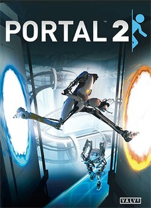
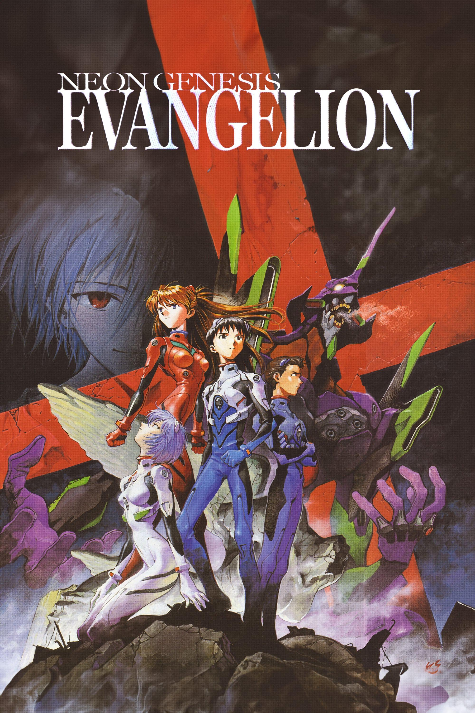
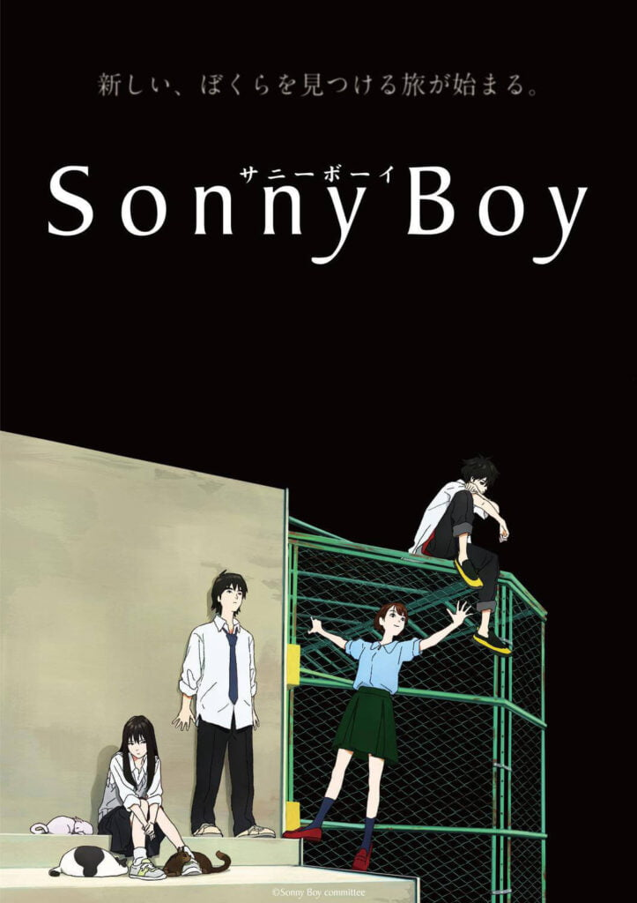
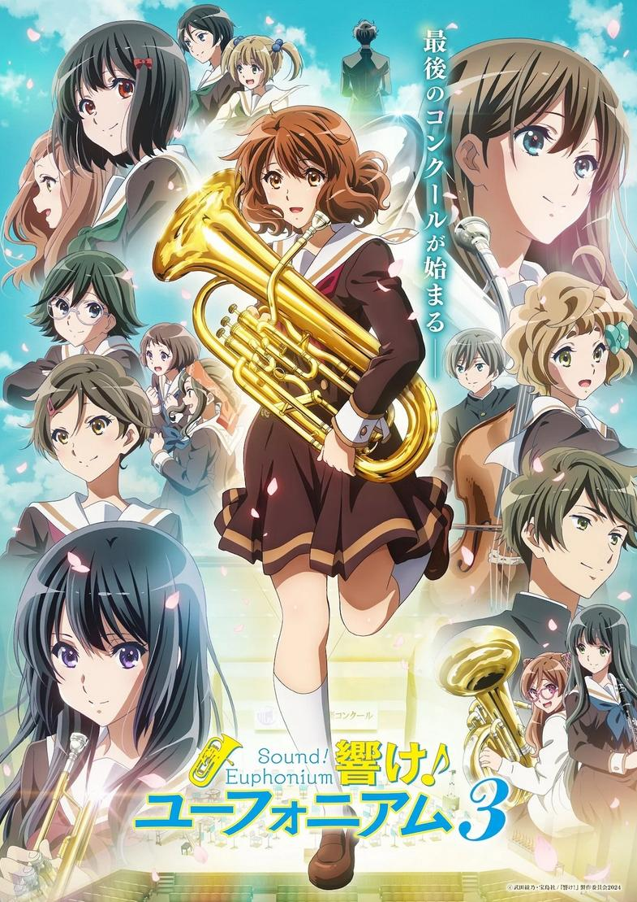
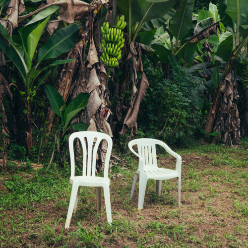

Meu nome é Lucas Orlandini Nunes, tenho 18 anos e moro em Santos, São Paulo. Para o bem ou para o mal, desde criança passo bastante tempo no computador, o que despertou minha curiosidade sobre como a computação funciona. Por isso, um pouco antes de concluir o ensino médio, surgiu meu interesse na área de programação e engenharia de software. Ao longo dos anos, também desenvolvi um grande interesse por jogos digitais, especialmente os competitivos online e passava horas jogando com amigos. Sempre gostei de aprender sobre a cultura de outros países e, recentemente, comecei a estudar novos idiomas, além do inglês. Me considero uma pessoa de gostos bem variados, sempre buscando manter a mente aberta para diferentes estilos de música e entretenimento no geral.
Sobre Mim
Hobbies & Interesses
Jogos Favoritos



Animes Favoritos



Música Favorita

Formação
2025 - 2029
Bacharelado em Engenharia de Software
UNINTER (Em andamento)
2022 - 2024
Ensino Médio Técnico em Administração
SENAC Santos - Foco em Negócios e Marketing
Idiomas
Cursos Complementares
Leituras Técnicas
📖
Código Limpo (Robert C. Martin)
📖
Entendendo Algoritmos (Aditya Bhargava)
Portfólio
Tic-Tac-Toe
Desenvolvido durante a trilha de Java Developer na JetBrains Academy.
Neste projeto, apliquei conceitos de Programação Orientada a Objetos (POO) e lógica avançada.
Ver Repositório